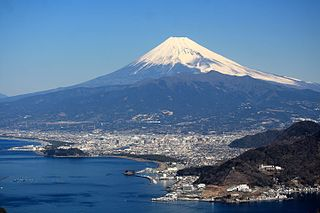

Fun Trip
Mount Fuji


Mount Fuji is the highest mountain in Japan at 3,776 meters (12,388 ft). The volcano’s exceptionally symmetrical cone is a well-known symbol of Japan and it is frequently depicted in art and photographs, as well as a popular tourist attraction for sightseers and climbers. An estimated 200,000 people climb Mount Fuji every year, 30% of whom are foreigners. The ascent can take anywhere between three and eight hours while the descent can take from two to five hours.